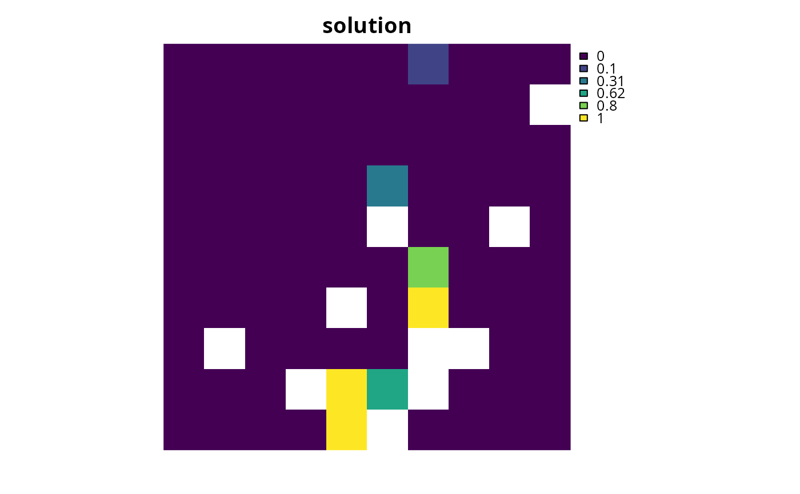

Specify that the SYMPHONY
software (Ralphs & Güzelsoy 2005) -- using the lpsymphony package --
should be used to solve a conservation planning problem().
This function can also be used to customize the behavior of the solver.
It requires the lpsymphony package to be installed
(see below for installation instructions).
add_lpsymphony_solver( x, gap = 0.1, time_limit = .Machine$integer.max, first_feasible = FALSE, verbose = TRUE )
| x |
|
|---|---|
| gap |
|
| time_limit |
|
| first_feasible |
|
| verbose |
|
Object (i.e. ConservationProblem) with the solver
added to it.
SYMPHONY is an
open-source mixed integer programming solver that is part of the
Computational Infrastructure for Operations Research (COIN-OR) project.
This solver is provided because it may be easier to install
on some systems than the Rsymphony package. Additionally --
although the lpsymphony package doesn't provide the functionality
to specify the number of threads for solving a problem -- the
lpsymphony package will solve problems using parallel processing
(unlike the Rsymphony package). As a consequence, this
solver will likely generate solutions much faster than the
add_rsymphony_solver().
Although formal benchmarks examining the performance of this solver
have yet to be completed,
please see Schuster et al. (2020) for benchmarks comparing the
run time and solution quality of the Rsymphony solver.
The lpsymphony package is distributed through Bioconductor. To install the lpsymphony package, please use the following code:
if (!require(remotes)) install.packages("remotes") remotes::install_bioc("lpsymphony")
Ralphs TK and Güzelsoy M (2005) The SYMPHONY callable library for mixed integer programming. In The Next Wave in Computing, Optimization, and Decision Technologies (pp. 61--76). Springer, Boston, MA.
Schuster R, Hanson JO, Strimas-Mackey M, and Bennett JR (2020). Exact integer linear programming solvers outperform simulated annealing for solving conservation planning problems. PeerJ, 8: e9258.
# \dontrun{ # load data data(sim_pu_raster, sim_features) # create problem p <- problem(sim_pu_raster, sim_features) %>% add_min_set_objective() %>% add_relative_targets(0.05) %>% add_proportion_decisions() %>% add_lpsymphony_solver(time_limit = 5, verbose = FALSE) # generate solution s <- solve(p) # plot solution plot(s, main = "solution", axes = FALSE, box = FALSE)# }